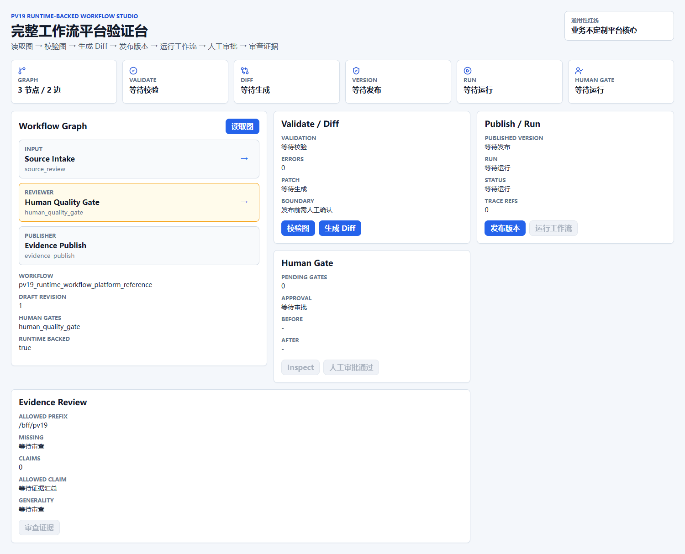
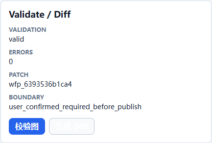
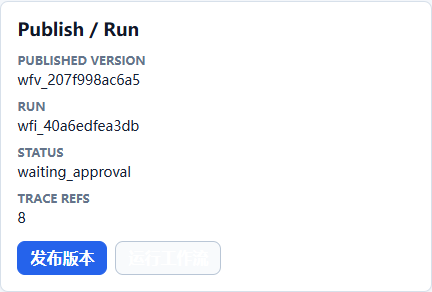
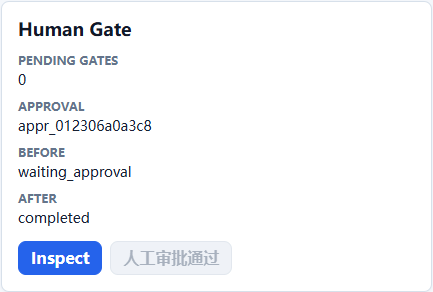
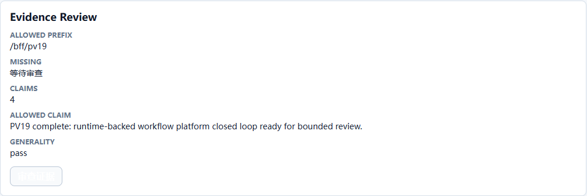

PV19 阶段性自动化验收报告
本报告由 Chrome CDP 自动化执行真实用户路径生成。浏览器只访问 /bff/pv19，未直连 /v1/rpc 或内部 runtime 路径。
验收结论PASS
允许声明PV19 complete: runtime-backed workflow platform closed loop ready for bounded review.
平台红线业务不定制 runtime core
目标架构与当前实现
当前实现以 Workflow Console PV19 页面作为入口，通过正式 BFF DTO 调用 Gateway workflow repository/runtime/approval/evidence read model。目标架构中的完整 Workflow Studio、完整 Agent executor、生产治理硬化仍是后续阶段。
真实用户路径截图

工作台加载：图、状态卡、通用性红线可见。

图校验与 WorkflowDiff：发布前需要人工确认边界。

发布版本并运行：runtime 进入 waiting_approval。

人工审批通过：approval.respond 推动 workflow 完成。

证据审查：汇总 trace、artifact、quality、human gate 与 route boundary。